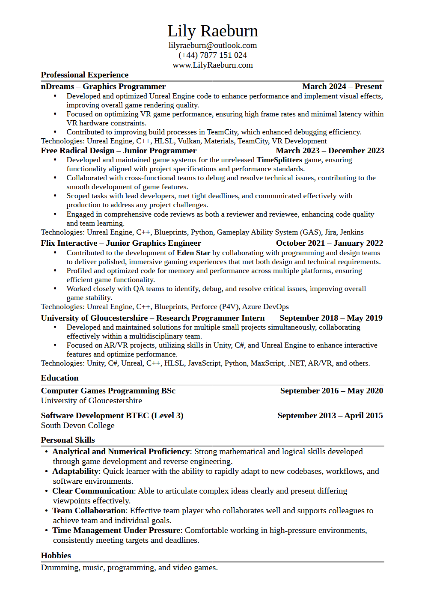

About Me
Hi, I'm Lily Raeburn.
I graduated from the University of Gloucestershire in 2020 with a 2:1 honors degree in Computer Games Programming. I have since gained valuable experience working in the gaming industry. At Flix Interactive, I served as a Junior Graphics Engineer on Eden Star, where I focused on performance profiling and bug fixing. At Free Radical Design, I contributed to an unreleased TimeSplitters game, working across various areas including tooling, UI, AI, networking, and gameplay features, with substantial experience in Unreal Engine and C++.
Currently, as a Graphics Programmer at nDreams, I am involved in developing and optimizing Unreal Engine code to enhance game performance and visual effects, including VR-specific optimizations. I have also contributed to build process improvements and addressed critical rendering issues.
Proficient in
- Programming languages: C++, C#, HLSL
- Technologies: Unreal Engine, Unity, Visual Studio, TeamCity, VR Development, Blueprints
Experience with
- Programming languages: C, ASM, JavaScript, Python
- Technologies: Vulkan, OpenGL, DevOps, AWS, PostgreSQL, React, Django, BitBucket, Perforce, GitHub
Resume
